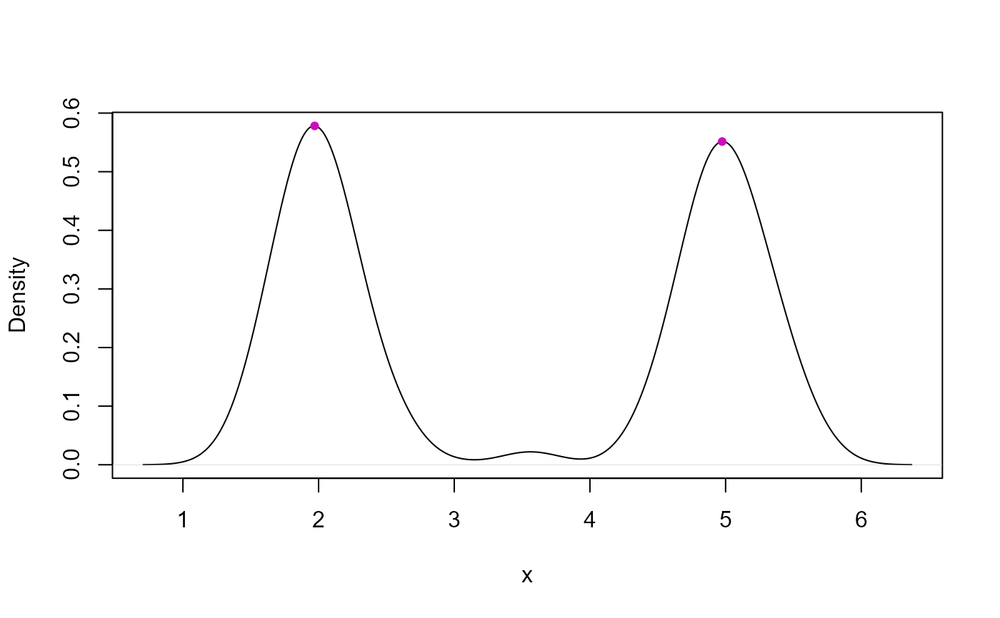

Esta función detecta los picos (modas) en un conjunto de datos x usando estimación
de densidad. Para cada moda, determina el rango en el eje X donde la densidad desciende
hacia los mínimos adyacentes. También permite representar la densidad y los picos
detectados.
Arguments
- x
Vector numérico. Los datos sobre los que se calcularán las modas.
- bw
Número. Ancho de banda (bandwidth) para la estimación de densidad. Por defecto
bw = 2.- Q1
Número entre 0 y 1. Percentil de la densidad que se usa para filtrar los picos más relevantes. Por defecto
Q1 = 0.95.- plot
Lógico. Si es
TRUE, se genera un gráfico de la densidad con los picos detectados. Por defecto esTRUE.
Value
Una matriz con tantas filas como modas detectadas y dos columnas: min
y max, que representan el rango en X de cada moda.
Examples
set.seed(123) # Semilla
x <- c(
rnorm(200, mean = 2, sd = 0.3),
rnorm(5, mean = 3.5, sd = 0.1),
rnorm(200, mean = 5, sd = 0.3)
)
# Calcular y representar modas
modas <- findModes(x, bw = 0.2, Q1 = 0.5, plot = TRUE)

# Rangos en X de cada moda
modas
#> min max
#> moda1 0.7072493 3.156928
#> moda2 3.9328437 6.371437